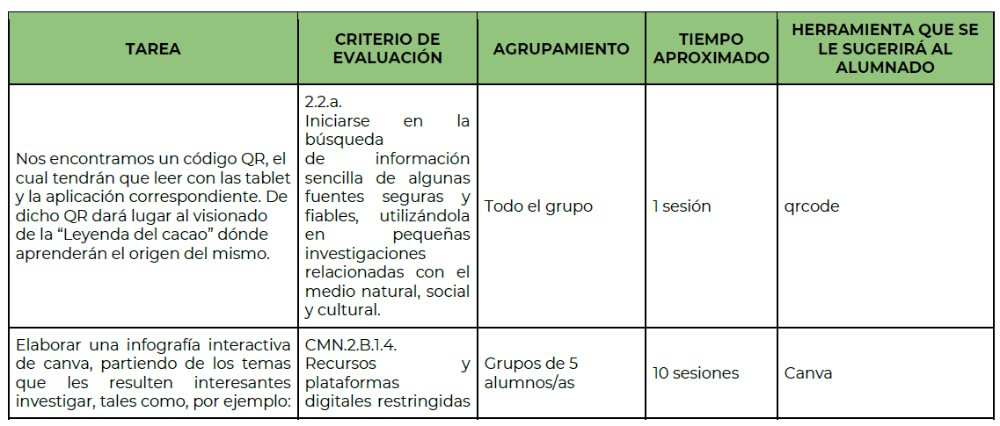
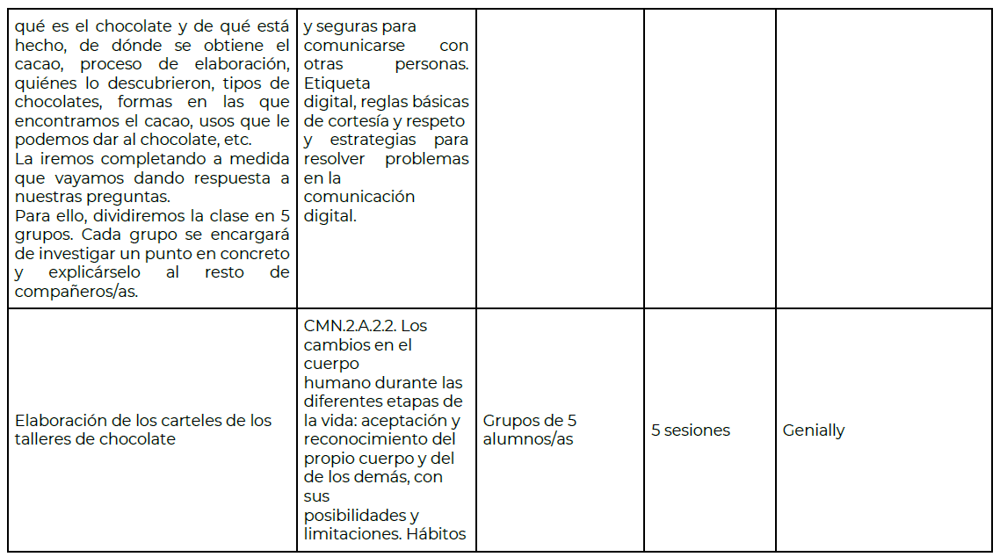
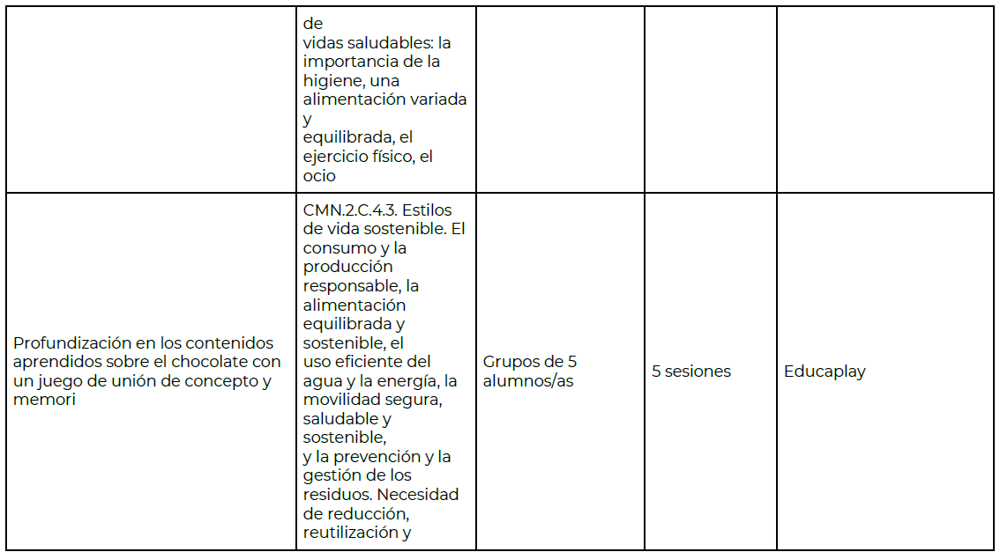
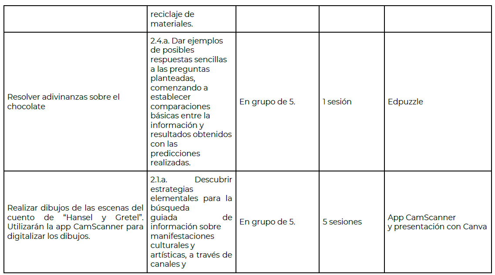
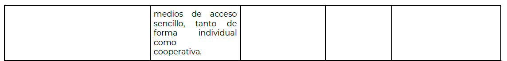
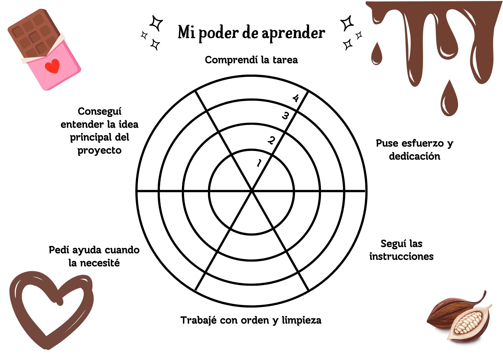
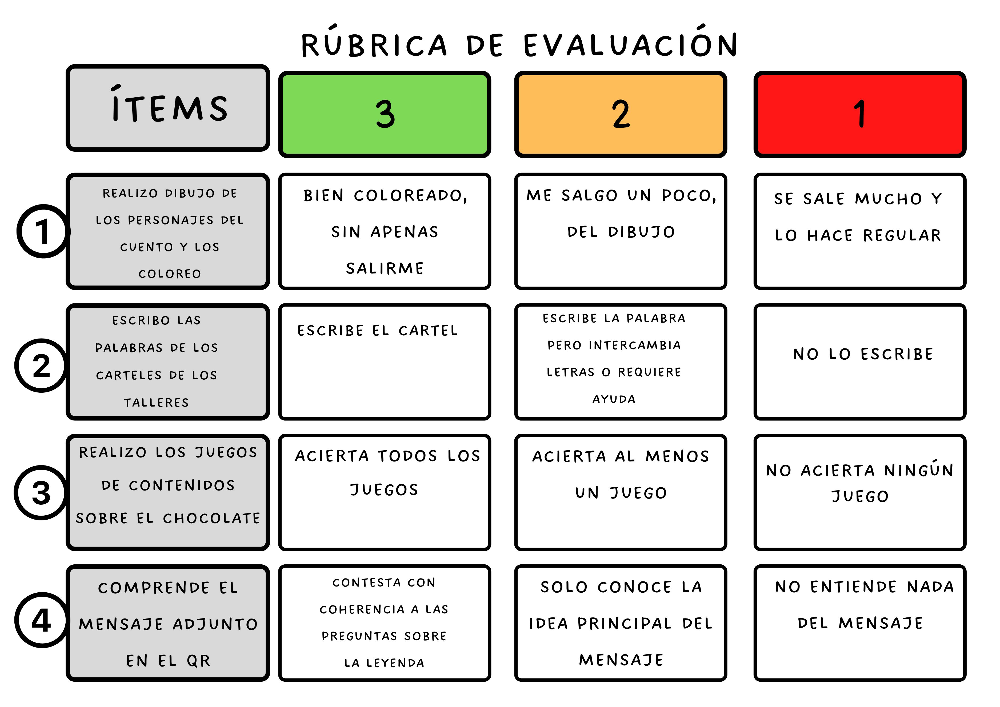
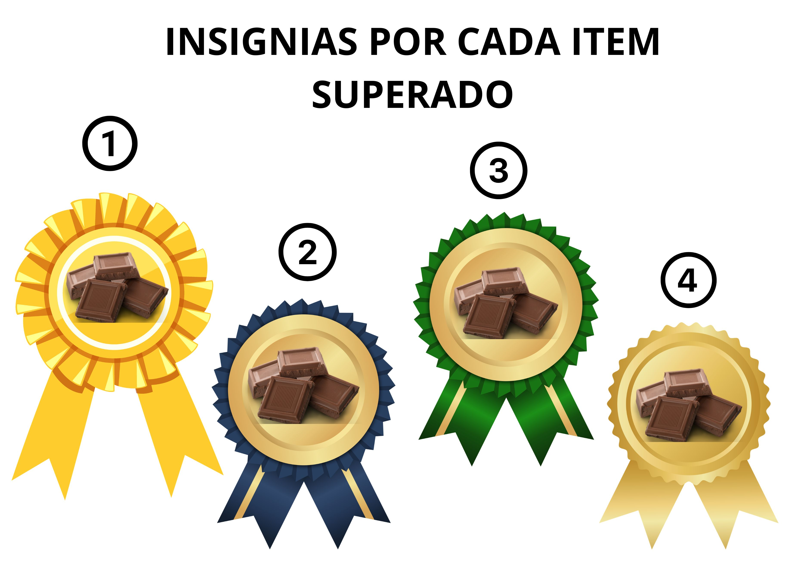

Aquí os dejamos la Guía Didáctica del proyecto:





INSTRUMENTOS DE EVALUACIÓN
Además, de la Guía Didáctica, adjuntamos otro elemento curricular tan importante como en la evaluación:
DIANAS DE EVALUACIÓN
Con este instrumento de evaluación pretendo comprobar si los niños/as son capaces de participar de forma colaborativa en la evaluación del proyecto de investigación.
La diana es un método de evaluación participativa, rápido y muy visual, que nos permite conocer la opinión de nuestros alumnos sobre diversos aspectos de nuestra actividad.
Esperamos obtener buenos resultados y que haya buena predisposición por parte del alumnado.
Las posibles variables que pueden surgir pueden ser que los niños/as tengan dificultad a la hora de realizar la tarea o no sepan cómo trabajar en grupo. Debido a que tienen tan solo 6 años, estaré en todo momento supervisando y orientando la tarea. Intentaré fomentar un buen clima para que puedan resolver los problemas que surjan entre ellos. Animaré a que expongan sus ideas, escuchen a sus compañeros/as y lleguen a un consenso.

INSIGNIAS DE SUPER EXPLORADOR (RÚBRICA CON CANVA)
Con este instrumento de evaluación pretendo motivar al alumnado para que se esfuerce en realizar bien las distintas tareas y al mismo tiempo reconocer el logro adquirido de cada uno.
Cada vez que participen en una tarea, cada alumno/a adquiere su insignia en forma de medalla. Aunque al ser pequeños las insignias se la llevarán todos y todas. Pero intentaremos en todo momento animar al alumnado para que consigan realizar las actividades con su mayor esfuerzo.
Las posibles variables que pueden surgir es que los/as niños/as no pudieran hacer solo las actividades propuestas. Debido a las edades con las que trabajo. Yo les guiaré en las actividades en todo momento. También motivaré y valoraré positivamente los logros de cada niño y ofreceré una intervención más individualizada a aquel/aquella que lo necesite.


La evaluación se ha convertido en uno de los puntos más importantes de la programación. Gracias a la evaluación los docentes podemos valorar los conocimientos, actitudes y el rendimiento de nuestros alumnos/as. De igual modo, los alumnos/as pueden saber el grado de consecución de los logros propuestos, competencias que nos hemos marcado desarrollar y las habilidades trabajadas.
Si atendemos a la Orden 30 de mayo de 2023, por la que se desarrolla el currículo correspondiente a la etapa de Educación Primaria en la Comunidad Autónoma de Andalucía, la evaluación será global, continua y formativa. Además, debemos tener en cuenta los tipos de evaluación que existen según el momento en el que la hagamos: inicial, procesual y final.
La técnica principal para evaluar en esta etapa es la observación directa y sistemática. En cuanto a los criterios de evaluación, son diversos, tales como las escalas de observación, anecdotarios, listas de control, etc.